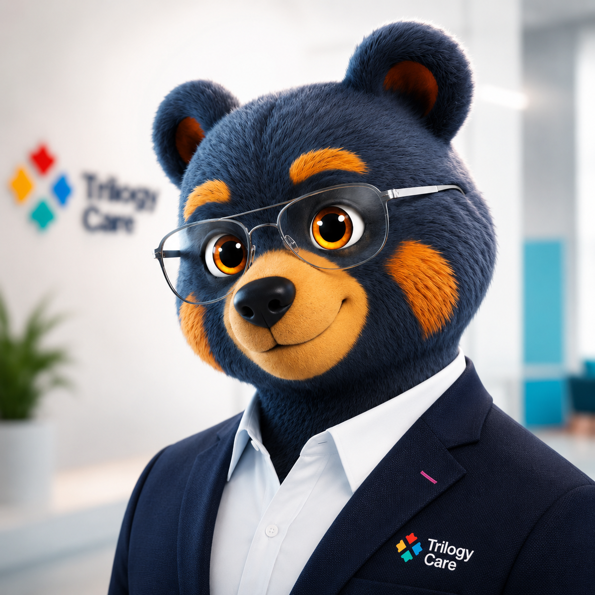

From experiment to everyday — how artificial intelligence gave our people their time back.
Skilled people buried in paperwork — reports, claims, case notes, chasing information across a dozen systems. Clinical teams stretched thin, their time going to admin instead of clients. Sound familiar?
Your board's challenge — lift productivity from ~20% toward 60%. We faced the same gap. Here's how we started closing it, without working anyone harder.
Reads records, calls, invoices and emails — and finds what matters in seconds.
Writes the report, the response, the summary — ready for a person to check and approve.
It proposes; our staff decide. Nothing goes out without a human saying yes.

“Smarter than the average bear.”An AI teammate (we call it Yogi) that reads the records, does the digging and drafts the work — a person always checks and signs.
Each team member got their own AI workspace, trained on our systems — so the whole organisation moves faster, not just one team.
The repetitive jobs — claims, reconciliations, reports — now run themselves around the clock. No one chasing them.
A complaint needed a full review across phone calls, invoices, emails and client records. By hand, that's a quality officer's whole day. Yogi gathered and cross-referenced it in minutes — and drafted the regulator-ready response.
↳ Not just faster. More thorough — it caught a conflict of interest a person could miss.Not “where can we put AI?” — “what's wasting our people's time?” Then we fixed that.
AI does the grunt work and drafts. People judge, decide and sign. Always.
One job at a time, measured before the next. No big-bang, no big risk.
in care funding claimed correctly every day — faster and more accurately than manual processing, with AI doing the classification.
Work that took a person twenty minutes of careful cross-checking is done in five — because dozens of AI assistants work on it at the same time. A team that never sleeps.
A screen our team opens dozens of times a day went from a 40-second wait to under two — more than 20× faster. And because the AI doesn't tire or skip a step, fewer errors and less rework.
The assessment still needs your OT. The communication still needs your speech pathologist. But the writing-up, the funding forms, the chasing — handled. That's how ~20% becomes 60%: not more hours, less admin.
The clinician does the assessment; the AI turns the notes into the formal AT report and funding request — clinical justification built in, ready to review and sign.
↳ Hours of writing back, on every client.It matches each client to the correct scheme and pre-fills the application against that program's rules — so requests land first time.
↳ Fewer knock-backs, faster approvals.First contact is captured, triaged and booked, and the clinician gets a clean pre-visit summary before they walk in the door.
↳ Visit time on the person, not the form.From site notes to a costed, compliant minor-home-mod scope — or an equipment trial plan matched to the client's needs and the catalogue.
↳ Less back-office, more jobs done.A small team is the advantage — less to change, quicker to see the win. You don't need a strategy. You need one job.
The repetitive, time-eating task your team dreads. One is enough to prove the value.
Connect it to the systems that hold the answers, and keep a person in the loop.
Count the hours saved. When it works — and it will — move to the next job.
Two health organisations. One future — where technology gives people back their time.
When LifeTec's ready to explore it, we're right here.